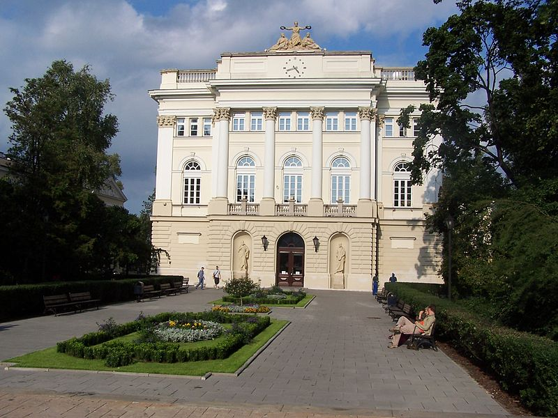

Fifth RECOMB Satellite Workshop
on Massively Parallel Sequencing
RECOMB-SEQ 2015
and
Fourth RECOMB Satellite Workshop
on Computational Cancer Biology
RECOMB-CCB 2015
April 10-11 2015, Warsaw, Poland
The RECOMB-SEQ and RECOMB-CCB workshops are held prior to the main conference, with a distinct paper submission processes and programs. Our goal is to bring together the community of scientists working on methods for massively parallel sequencing for and for cancer research. Papers accepted for workshops will be considered for a special track publication in the journal Bioinformatics.
Venue

The workshops will take place at the the Old Library of the University of Warsaw, at the main campus:
Krakowskie Przedmieście 26/28, 00-927 Warsaw. Workshop will start on Friday, April 10 at 2 pm and end on Saturday, April 11 around 5.30 pm. More travel information on the Venue page.
Scope of RECOMB-SEQ
The recent revolution in sequencing technology has opened the door for myriads of new applications and biomedical discoveries. Projects are under way to sequence thousands of individuals, tens of thousands of vertebrate species, whole microbial ecosystems, and thousands of pathogen and tumor cell genomes. Simultaneously, the novelty and complexity of the data has highlighted the challenges and limitations of current methods. As the technology continues to evolve and approaches its third generation, the challenges facing the community are becoming increasingly computational. This workshop brings together leading researchers in the mathematical, computational, and life sciences to discuss emerging frontiers in massively parallel sequencing. The emphasis of all contributed work will be on applying statistical and algorithmic approaches to improve sequence data management, analysis, and interpretation.
Scope of RECOMB-CCB
Cancer biology is undergoing a revolution driven by the application of high-throughput techniques such as genome sequencing, single-cell analysis, miRNA profiling, and mass spectrometry to tumor samples. These techniques give rise to large collections of data that are impacting both basic cancer biology as well as clinical applications. Cancer is a disease of tremendous complexity, and thus the analysis and interpretation of this data, taking a systems biology approach, demands sophisticated, specialized computational methods.This workshop brings together leading researchers in the mathematical, computational and life sciences to discuss cutting edge cancer research. The emphasis of all contributed work will be on applying statistical and algorithmic approaches to improve our understanding of cancer and on the development of useful, effective and efficient new methods in this area.
Program of RECOMB-SEQ and RECOMB-CCB
Workshop will start on Friday, April 10 at 2 pm and end on Saturday, April 11 around 5.30 pm. Reception will be open at 12.
Detailed RECOMB-SEQ and RECOMB-CCB program
The conference dinner will be held in the Villa Foksal Restaurant at 3/5 Foksal Street on Friday, 10 April at 20:00.
The abstract book is available for download. The participants will receive a printed version, so please save the trees and do not print the whole document yourself.
Keynote Talks
- Jacek Błażewicz, Institute of Bioorganic Chemistry, Polish Academy of Sciences
DNA Sequencing - from SBH to NGS and Hybrid Algorithms - Francesa Ciccarelli, Cancer Epidemiology & Population Health, King's College London
Proliferation history of tumors and impact on therapy - Marco Gerlinger, Centre for Cancer and Evolution, Institute of Cancer Research
Structure and dynamics of cancer heterogeneity landscapes: analytical approaches and challenges - Gerton Lunter, Nuffield Department of Medicine, University of Oxford
Analytical challenges in next-generation sequencing
Notification of acceptance
for RECOMB-SEQ and RECOMB-CCB
You can find the list of accepted paper talks, highlights, short talks and posters for
RECOMB-SEQ: here
RECOMB-CCB: here
Contributions
We solicit contributions in four different categories as follows:
- Manuscripts describing original work on computational aspects of genomic research involving massively parallel sequencing and computational approaches in cancer biology. These should describe method development and application and will be considered for a special track publication in the journal Bioinformatics.
- Highlights Track abstracts. 1-2 pages describing computational aspects of work that has been published in a journal after October 1, 2013, or papers that are "in press" at the time of submission and are already linked on the journal web site. This track is joint with the main RECOMB conference; see Call for Highlights.
- Abstracts for short talks. 1-2 pages describing original work, including software applications. These will be considered for short presentations as well as for posters.
- Posters.
Submission details follow below.
Topics of interest for RECOMB-SEQ include, but are not limited to:
- Discovery and genotyping of genomic variants, including SNPs, indels, and structural variants
- Local and de novo sequence assembly
- RNA sequencing, including the analysis of RNA expression and novel transcript assembly
- Read mapping
- Methods for emerging sequencing technologies, such as single-cell or single molecule real time sequencing
- Translational applications of sequencing data, including cancer genomics and infectious disease diagnostics and surveillance
- Epigenetics, including ChIP-SEQ analysis, methylation profiling, and histone modifications
- Metagenomics
Topics of interest for RECOMB-CCB include, but are not limited to:
- Methods for analysis of high-throughput sequencing or microarray data with a specific application to cancer
- Inference of somatic mutations, copy number aberrations, structural rearrangements, and other genomic aberrations from high-throughput sequencing or microarray data sets
- Clonality analyses and tumor evolution
- Epigenetic variation such as methylation profiling, methyl-seq, ChIP-seq analysis applied to cancer
- Transcriptome analysis and assembly, alterative splicing, and fusion gene analyses from RNAseq data
- Applications of single-molecular and nanopore sequencing technologies to cancer
- Pathway analysis and network reconstruction with a focus on cancer biology
- Cancer proteomics
- Data integration from multiple molecular assays
Key dates and Registration
Papers submission deadline: January 17, 2015 January 23, 2015 submission closed!
Notification of paper acceptance: February 14, 2015
Final manuscript due: February 28, 2015 submission closed!
Highlights submission deadline: January 15, 2015 submission closed!
Notification of highlights: February 14, 2015
Short talk and poster abstract submission deadline: February 21, 2015 submission closed!
Notification of short talks and posters: February 28, 2015
Early registration deadline: March 4, 2015
Workshop: April 10-11, 2015
Registration to workshops is joint with the main RECOMB conference, see the Registration page for details.
Call for Papers
Manuscripts should be no more than 10 single-spaced US letter or A4 pages with at most a 6.5x9" text area in at least 11 point font. Title and authors, corresponding author's email address, 100-250 word abstract, references, figures, and tables all included. An optional short appendix may contain details or additional data to be consulted at the discretion of the program committee. Authors of accepted manuscripts will have to reformat them for submission to Bioinformatics. Manuscripts must be submitted electronically in PDF format via the EasyChair system.
Submissions must be received in electronic form by January 17, 2015.
Manuscripts submitted for review should represent original, previously unpublished work. At the time of submission to the workshop, and for the entire review period, the work should not be under review by any other conference or scientific journal.
Accepted submissions will be accepted for a talk at the workshop and will further be considered for submission to the journal Bioinformatics.
Special handling of papers submitted to RECOMB 2015
If you would like to consider submitting a paper rejected by RECOMB 2015 to the satellite workshop, you may do so by the regular deadline of January 17. You must include in your submission the reviews received from RECOMB together with a rebuttal addressing the concerns raised by the reviewers. The submitted manuscript should also be modified according to the reviews, or provide an explanation of why modifications are unnecessary. All reviews will be treated confidentially and will only be visible to the PC members evaluating your paper.
Please note that acceptance to RECOMB-SEQ or RECOMB-CBB is not guaranteed, even if you have revised your submission. All papers, including those submitted directly to either satellite meeting, will be equally evaluated on the basis of scientific quality, technical novelty, and level of interest to the respective community.
Call for Abstracts and Posters
Abstracts containing original and unpublished material will be considered for oral presentation. Abstracts describing computational aspects of work recently published elsewhere will be considered for oral presentation in the Highlights track.
All abstracts are limited to two pages, can contain figures, and must be submitted electronically in PDF format via the EasyChair system. Selection of abstracts for oral and poster presentation will be made by the program committee.
Abstracts for Highlights Track must be submitted via the EasyChair system by January 15, 2015 (joint with RECOMB Highlights Track submission). For more details see Call for Highlights.
Submissions for short talks and posters must be received in electronic form via the EasyChair system by February 21, 2015.
Program committee SEQ & CCB
- Niko Beerenwinkel (chair SEQ), ETH Zurich, Switzerland
- Jan Korbel (chair SEQ), European Molecular Biology Laboratory, Germany
- Ken Chen (chair CCB), M.D. Anderson Cancer Center, United States
- Ben Raphael (chair CCB), Brown University, United States
- Lodewyk Wessels (chair CCB), The Netherlands Cancer Institute, Netherlands
- Alexej Abyzov, Mayo Clinic, United States
- Tatsuya Akutsu, Kyoto University, Japan
- Max Alekseyev, George Washington University, United States
- Patrick Aloy, Institute for Research in Biomedicine, Spain
- Vikas Bansal, University of California San Diego, United States
- Gurkan Bebek, Case Western Reserve University, United States
- Inanc Birol, British Columbia Genome Sciences Centre, Canada
- C.Titus Brown, Michigan State University, United States
- Dongbo Bu, Insitute of Computing Technology, Chinese Academy of Sciences , China
- Mark Chaisson, University of Washington, United States
- Kun-Mao Chao , National Taiwan University, Taiwan
- Gang Fang , Mount Sinai School of Medicine, United States
- Heng Huang, Univ. of Texas at Arlington, United States
- Rui Jiang , Tsinghua University, China
- Ekta Khurana, Weill Cornell Medical College, United States
- Gunnar W. Klau, Centrum Wiskunde & Informatica, Netherlands
- Dominique Lavenier, IRISA / INRIA, France
- Hyunju Lee, Gwangju Institute of Science and Technology, South Korea
- Ming Li, University of Waterloo, Canada
- Jinze Liu, University of Kentucky, United States
- Stefano Lonardi, University of California, Riverside, United States
- Bojan Losic , Mount Sinai Hospital, United States
- Jian Ma, University of Illinois at Urbana-Champaign, United States
- Florian Markowetz , University of Cambridge, United Kingdom
- Tobias Marschall, Max Planck Institute for Informatics, Germany
- Manja Marz, Uni Jena, Germany
- Ryan Mills, University of Michigan Medical School, United States
- Sach Mukherjee , Netherlands Cancer Institute, Netherlands
- Niranjan Nagarajan, University of Maryland, United States
- Laurent Noé, Université Lille 1, France
- Arlindo Oliveira, Instituto Superior Técnico, Portugal
- Pierre Peterlongo , Centre INRIA Rennes-Bretagne-Atlantique, France
- Julio Saez-Rodriguez, European Bioinformatics Institute, United Kingdom
- S. Cenk Sahinalp, Simon Fraser University, Canada
- Michael Schatz, Cold Spring Harbor Laboratory, United States
- Alexander Schoenhuth, Centrum Wiskunde & Informatica, Netherlands
- Sohrab Shah , University of British Columbia, Canada
- Steven Skiena, Stony Brook University, United States
- Haixu Tang, Indiana University, United States
- Helene Touzet, CNRS - Centre national de la recherche scientifique, France
- Todd Treangen, National Biodefense Analysis and Countermeasures Center, United States
- Jerome Waldispuhl , McGill University, Canada
- Lusheng Wang, City University of Hong Kong, Hong Kong
- Wenyi Wang, The University of Texas MD Anderson Cancer Center, United States
- Dong Xu, University of Missouri, United States
- Shaojie Zhang, University of Central Florida, United States
- Louxin Zhang, National University of Singapore, Singapore
- Zhongming Zhao, Vanderbilt University, United States
Steering committee (RECOMB-SEQ)
- Inanc Birol, Canada's Michael Smith Genome Sciences Centre, Canada
- Michael Brudno, University of Toronto, Canada
- Eran Halperin, Tel Aviv University, Israel
- Ben Raphael, Brown University, United States
- Cenk Sahinalp, Simon Fraser University, Canada
Steering committee (RECOMB-CCB)
- Joe Gray, Oregon Health Sciences University, United States
- Michael Hallett, McGill University, Canada
- Ben Raphael, Brown University, United States
- Sohrab Shah, BC Cancer Agency, Canada
- Zohar Yakhini, Technion and Agilent Technologies, United States
Organizing committee
- Norbert Dojer (chair), University of Warsaw, Poland
- Anna Gambin (chair), University of Warsaw, Poland
- Agata Charzyńska, Polish Academy of Sciences, Poland
- Mateusz Łącki, University of Warsaw, Poland
Sponsors
RECOMB-SEQ and RECOMB-CCB 2015 are receiving support from: